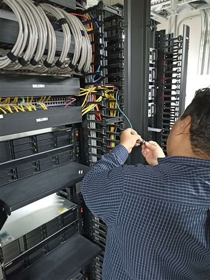
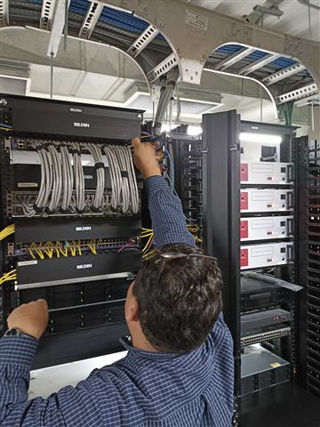
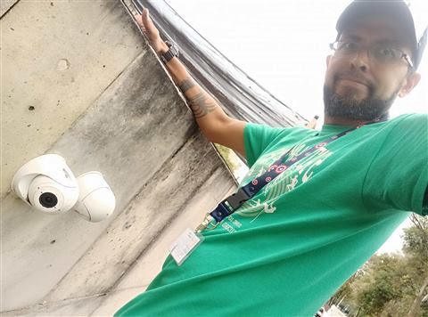
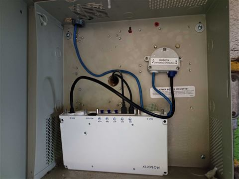
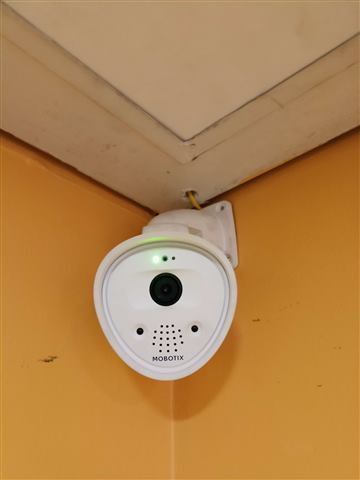
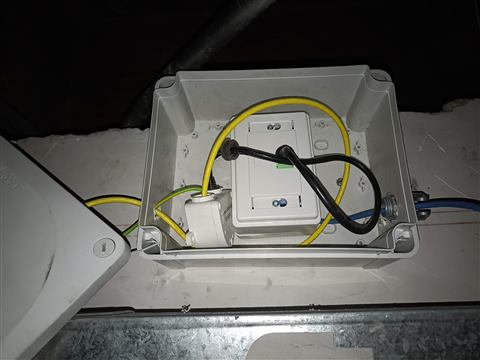
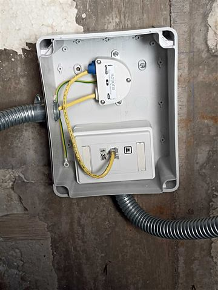
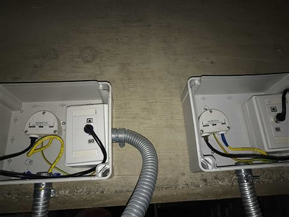
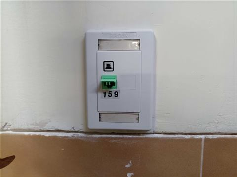

Información General
Instituto Nacional de Rehabilitación Luis Guillermo Ibarra Ibarra
Calz México-Xochimilco 289, Coapa, Col. Arenal de Guadalupe, Tlalpan, 14389 Ciudad de México, CDMX
Abril 2025 / Noviembre 2025
Ciudad de México
Descripción
El proyecto consistió en la implementación y modernización de la infraestructura tecnológica del Instituto Nacional de Rehabilitación "Luis Guillermo Ibarra Ibarra", mediante la instalación de un sistema integral de videovigilancia IP, red de datos, sistema de voceo hospitalario y plataforma de almacenamiento para grabación de video. Los trabajos incluyeron la instalación de 150 cámaras MOBOTIX, 45 nodos de red certificados, el reemplazo de 500 bocinas de voceo, la instalación y configuración de 2 servidores NAS QNAP para el almacenamiento centralizado de las grabaciones, así como la construcción de canalizaciones con tubería conduit de pared gruesa y cableado estructurado, cumpliendo con las especificaciones técnicas y los estándares de calidad requeridos para instalaciones en entornos hospitalarios.
Objetivos
- Modernizar la infraestructura tecnológica del Instituto Nacional de Rehabilitación mediante la implementación de soluciones de videovigilancia, redes y comunicación hospitalaria.
- Fortalecer la seguridad del hospital con la instalación de 150 cámaras IP MOBOTIX integradas a un sistema centralizado de monitoreo y grabación.
- Implementar una infraestructura de red confiable mediante la instalación de 45 nodos de cableado estructurado certificados.
- Renovar el sistema de voceo hospitalario con el reemplazo de 500 bocinas, garantizando una comunicación eficiente en todas las áreas intervenidas.
- Implementar una plataforma de almacenamiento de video mediante la instalación y configuración de 2 servidores NAS QNAP, asegurando la disponibilidad y resguardo de las grabaciones.
- Construir una infraestructura de canalización robusta utilizando tubería conduit de pared gruesa y accesorios certificados, cumpliendo con los requerimientos de seguridad y durabilidad para ambientes hospitalarios.
- Ejecutar el proyecto conforme a las buenas prácticas de ingeniería, asegurando la calidad de la instalación, la continuidad operativa y la confiabilidad de los sistemas implementados.
Alcance del Proyecto
- Planeación y levantamiento técnico de las áreas de intervención.
- Diseño y ejecución de canalizaciones para sistemas de seguridad electrónica y telecomunicaciones.
- Instalación de tubería conduit de pared gruesa, cajas de registro, soportería y accesorios para ambientes hospitalarios.
- Tendido y organización del cableado estructurado y cableado para sistemas especiales.
- Instalación y configuración de 150 cámaras IP MOBOTIX.
- Implementación de 45 nodos de red con certificación de cableado estructurado.
- Instalación, configuración e integración de 2 servidores NAS QNAP para el almacenamiento centralizado de video.
- Reemplazo e instalación de 500 bocinas del sistema de voceo hospitalario.
- Configuración e integración de los sistemas de videovigilancia y almacenamiento.
- Identificación, etiquetado y organización de la infraestructura instalada.
- Realización de pruebas de funcionamiento, validación de equipos y puesta en operación de los sistemas.
- Entrega de una infraestructura tecnológica segura, confiable y preparada para la operación continua en un entorno hospitalario de alta especialidad.
Materiales y Tecnologías Utilizadas
Estadísticas del Proyecto
240
Días de ejecución
150
Cámaras IP MOBOTIX
45
Nodos de Red
500
Bocinas Hospitalarias
2
Servidores NAS QNAP
100%
Proyecto Entregado
Galería del Proyecto
Evidencias fotográficas del desarrollo y ejecución del proyecto.









Resultados
El proyecto fue ejecutado y puesto en operación exitosamente, entregando una infraestructura tecnológica integral, moderna y de alta disponibilidad para el Instituto Nacional de Rehabilitación (INR). Como parte de la solución, se implementó una red de cableado estructurado con la instalación y certificación de nodos de datos, garantizando una conectividad confiable para aproximadamente 150 cámaras IP MOBOTIX, equipos de comunicaciones y demás dispositivos de la infraestructura tecnológica. Adicionalmente, se llevó a cabo la instalación e integración del sistema de voceo institucional, mediante la distribución estratégica de bocinas en las diferentes áreas del complejo hospitalario, permitiendo la emisión de anuncios generales, mensajes de emergencia y comunicaciones operativas con una cobertura eficiente y una excelente calidad de audio. Asimismo, se configuró la plataforma de almacenamiento centralizado mediante servidores NAS QNAP, implementando políticas de grabación, administración de usuarios, monitoreo del sistema y estrategias de almacenamiento que garantizan la disponibilidad, integridad y continuidad de la información generada por el sistema de videovigilancia. La integración de la infraestructura de telecomunicaciones, el sistema de videovigilancia IP, la plataforma de almacenamiento y el sistema de voceo permitió dotar al instituto de una solución tecnológica robusta, escalable y confiable, fortaleciendo la seguridad, optimizando la comunicación interna y mejorando la capacidad de respuesta ante eventos operativos y situaciones de emergencia. Todas las actividades fueron ejecutadas conforme a criterios de ingeniería, siguiendo las mejores prácticas para cableado estructurado, sistemas IP, audio institucional e infraestructura tecnológica, entregando una plataforma preparada para futuras ampliaciones y nuevas integraciones.